AI Calculator · board v15-LCD (review 13, 2026-10-08) · firmware v15lcd-2026.10.10 (firmware-v15-lcd) · not for v14 boards
The power-up guide for the colour-screen board: the v14 board with the e-paper swapped for a 1.9" IPS LCD on socket J5. Do the steps in order, one at a time, the day the boards arrive. Every check is there to catch a fault before it can hurt the board. Ticks are saved in this browser only, separately from the v14 guide.
Which board do I have? The silk in the middle of the component side says AI CALC v15-LCD 2026-10-08, and there is a long 20 mm slot near the right-hand edge with a 30-pin socket J5 next to it. A v14 board says v14 and has J2 for the e-paper: use the v14 First Power-Up Guide for that one. Never flash v15 firmware onto a v14 board, or v14 firmware onto this one.
Five rules for the whole day
Test points on the board, all on the component side, labelled on the silkscreen, same places as v14: TP1 BOOT TP2 TX TP3 RX TP4 GND TP5 3V3 TP6 BAT TP7 EN. The black meter probe goes on TP4 for every voltage reading below.
Ten minutes here saves a board later. You only need four meter settings all day. Your meter's dial may look different; look for the same symbols, not the same positions.
| Measuring | Dial | Black lead | Red lead |
|---|---|---|---|
| Volts (a rail) | V⎓, 20 V | COM → TP4 GND | VΩ → the point named in the step |
| Short check / beep / diode | Ω or →|•))) | COM | VΩ |
| Current | mA | COM | mA socket, then straight back to VΩ afterwards |
Every name used below, on the real board (3D render of the v15-LCD files). Yellow tags = test pads, blue = sockets, green = chips, red = parts whose turn matters most. Hold the board the same way: component side up, magnet header (J3) at the top. Tap a picture to open it full size.
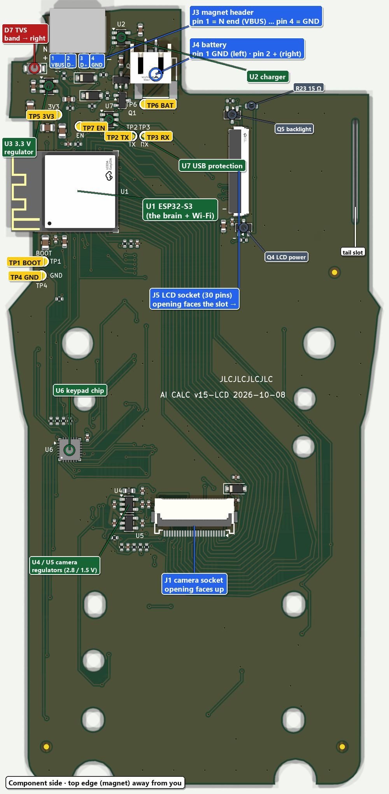
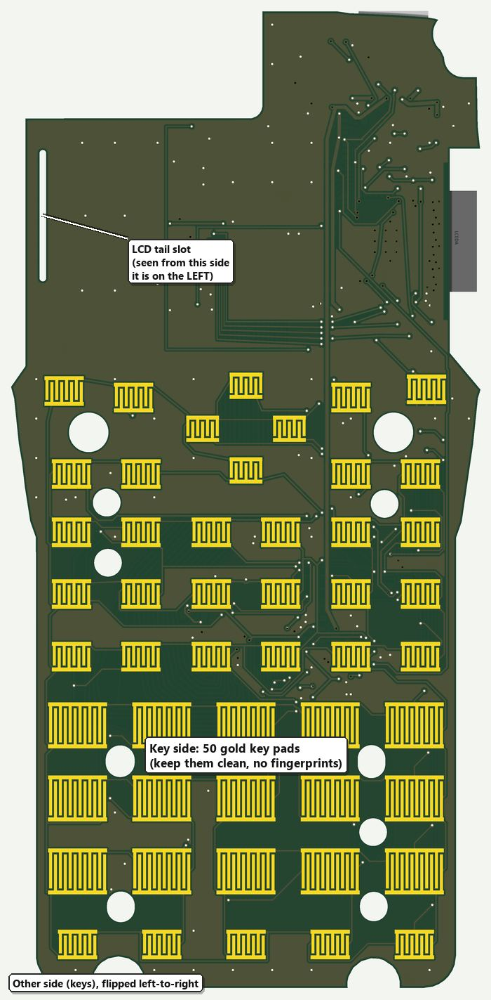
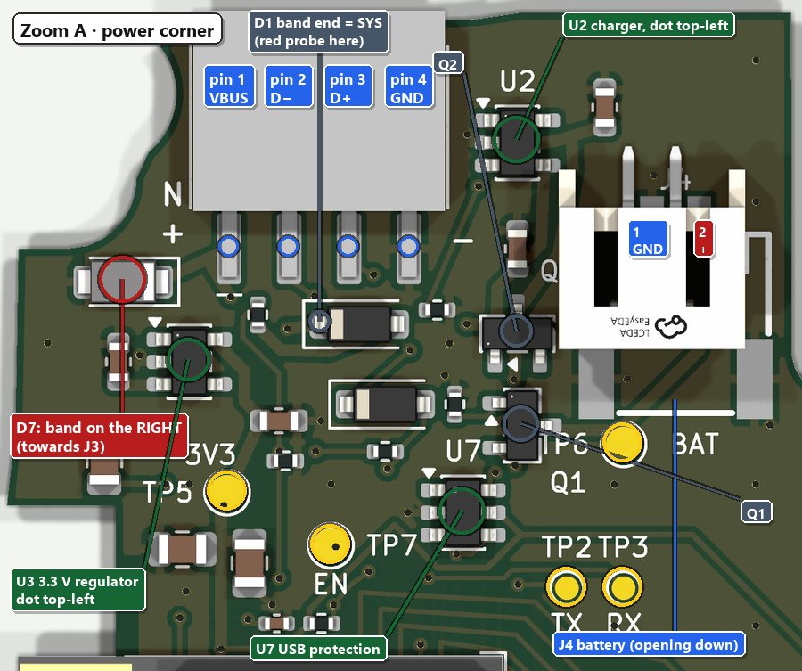
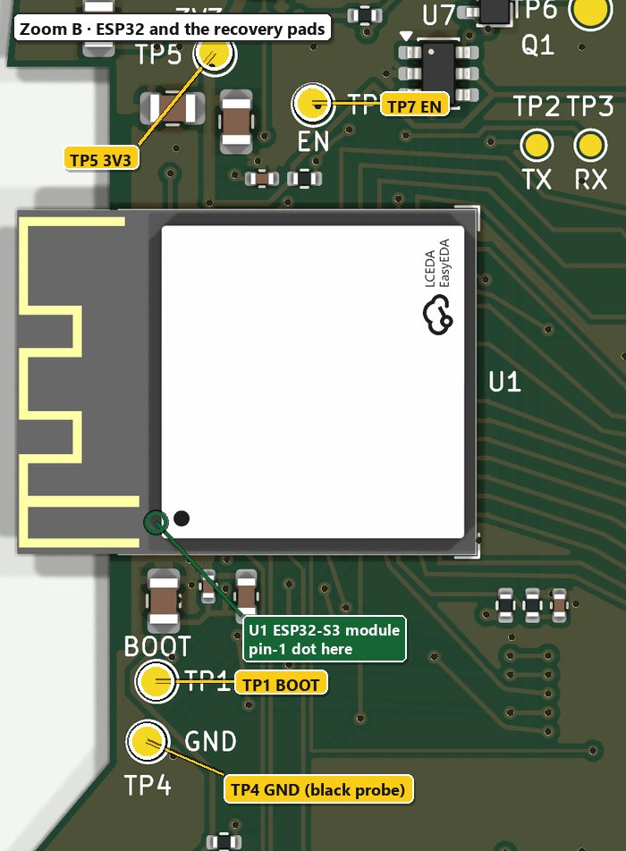
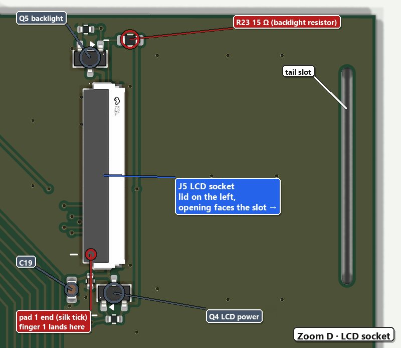
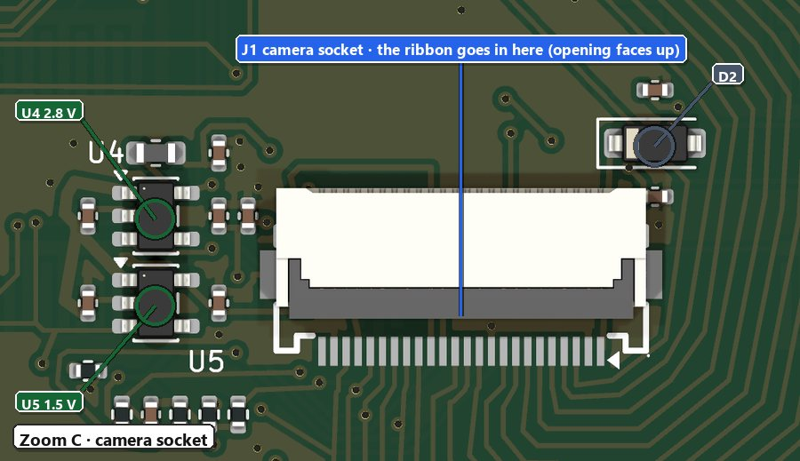
| Pad / part | What it is | You use it for |
|---|---|---|
| TP4 GND | Ground, 0 V | Black probe, every voltage reading |
| TP5 3V3 | The 3.3 V rail from U3 | Short check, first-power reading |
| TP6 BAT | Battery + after Q1 | Short check, battery reading |
| TP7 EN | ESP32 enable (reset when pulled to GND) | Reading; the "tap" in recovery |
| TP1 BOOT | GPIO0; held low at reset = download mode | Recovery |
| TP2 TX TP3 RX | Spare serial port | Last-resort flashing with a 3.3 V USB-serial adapter |
| J3 | Magnet header: 1 VBUS (N end), 2 D−, 3 D+, 4 GND | Power and USB data |
| J4 | Battery socket: 1 GND (left), 2 + (right) | The LiPo, after step 4 |
| U1 / U2 / U3 / U7 | ESP32-S3 / LiPo charger / 3.3 V regulator / USB protection | Heat check at first power |
| J1 / J5 | Camera socket / LCD socket | Ribbons, step 9 |
Unpowered, under good light (a phone camera zoomed in works). Hold it like the render: component side up, top edge (magnet header) away from you.
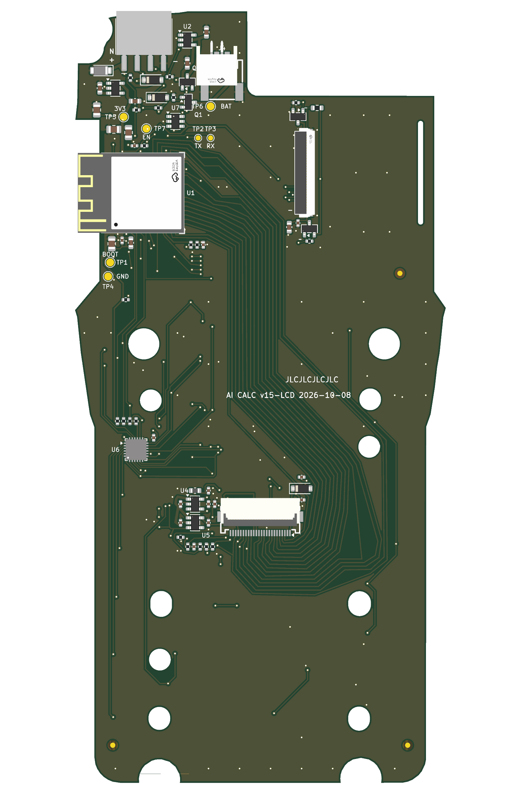
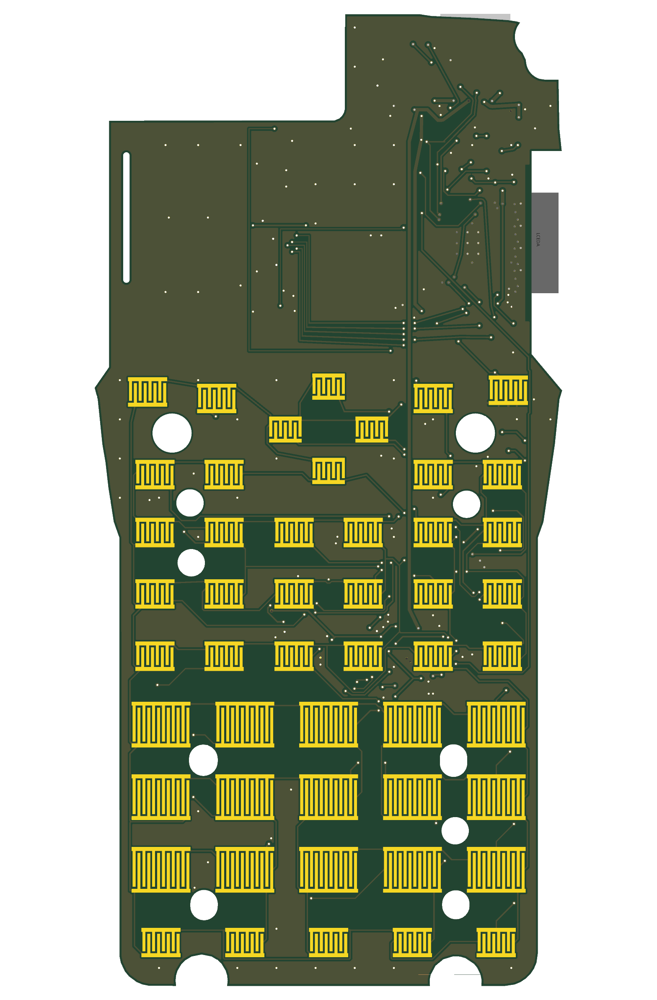
Use a 10× loupe or the phone camera at 2–3× zoom with the torch on. Compare each part with the drawings, then with zoom A / B / C / D in the board map. JLCPCB also e-mails placement photos: compare those too.
Real renders of these parts are in the board map zooms A–D. A wrongly turned part on a JLCPCB-assembled board is rare, but D7, the ICs and the two sockets are the ones where it would matter.
If a part is turned the wrong way or bridged: don't power it. Photograph it and ask.
These four readings catch the faults that could hurt the board or the PC on first power (QA plan A3 #16, 17, 19, 20). Nothing is plugged in, no battery.
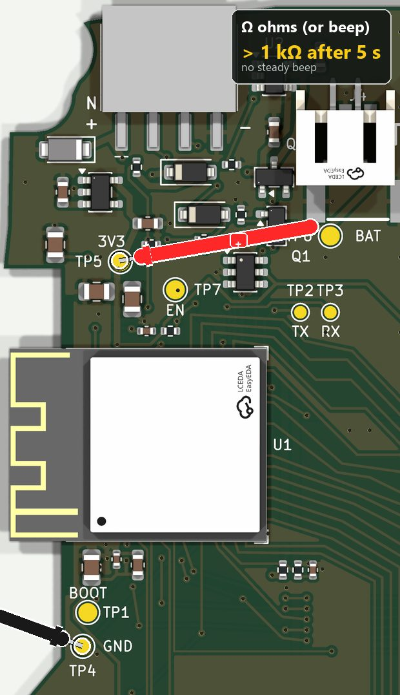
tap to enlarge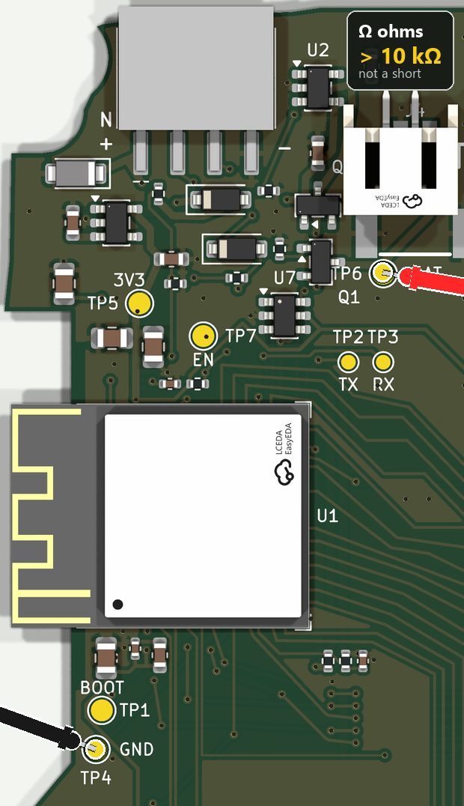
tap to enlarge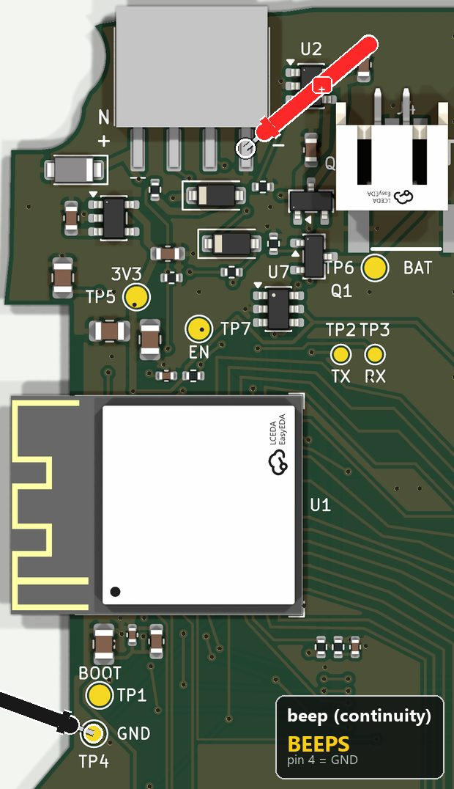
tap to enlarge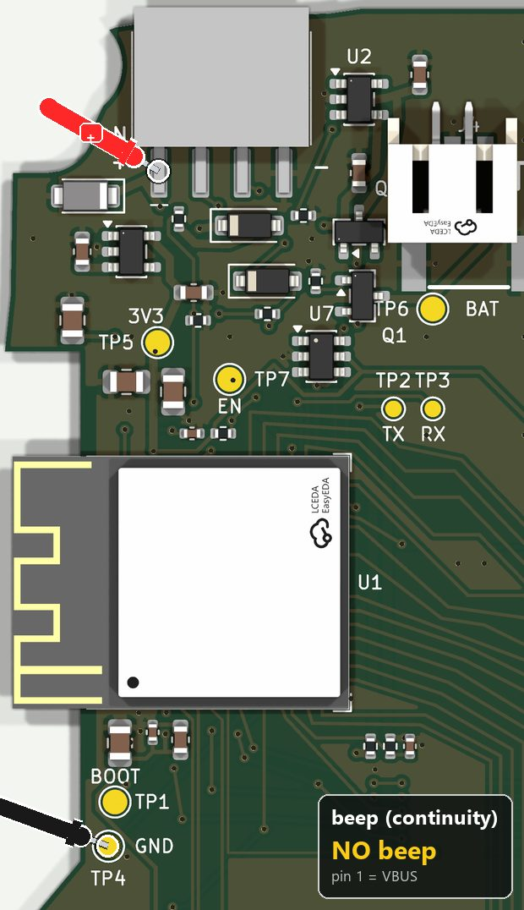
tap to enlargeUnchanged from v14. J3 is wired, from pin 1 (silk N and +, leftmost pin seen from the component side, top edge away from you): VBUS, D−, D+, GND. The last pin has the silk −.
Why: fitted backwards, the cable's 5 V lands on the board's GND. A computer port cuts the current quickly, but a phone charger can push 2 A or more through D7 and the charger chip and damage them. Never test that on purpose.
Q1 protects the board from a reversed cell, but with USB also plugged in a few mA would flow into the reversed cell. So: polarity first, always.
While the camera is out: measure its ribbon from the module's far edge to the tip and note it. Under about 70.3 mm means tape the module up to 1.7 mm towards J1 and drill the 7 mm window where the lens actually sits.
The panel's 30 gold fingers are not numbered on the tail. Plugged in the wrong way round, the screen just stays dark (nothing is damaged, but you lose time). The backlight is four small LEDs between finger 20 (+, the anode) and fingers 21–24 (−, the cathodes). A meter in diode mode lights them a little, and that tells you which end is which. The panel must be off the breakout and unplugged from everything.
Where the dot must end up: J5 is mirrored on purpose (like the camera's J1), so that a tail running naturally through the slot with no twist arrives with finger 1 at the bottom of J5, next to the silk tick (towards Q4), and the LED fingers in the top half (towards Q5). That comes from the panel drawing and has not been seen on a real panel yet confirm on the first panel. If your dot arrives at the top instead, don't plug it in: write it down and ask. The fix is a half twist of the tail (there is about 7 mm to spare) or a footprint swap before the next board order.
Nothing else connected: no battery, no LCD, no camera. Magnet piece pushed into J3, cable into a computer USB port. Keep one hand on the plug.
| Rail | Where (red probe) | Expect | If wrong |
|---|---|---|---|
| VBUS | J3 pin 1 leg (no TP on this rail) | ≈ 5.0 V (4.75–5.25) | Near 0 or negative: magnet piece backwards. Unplug. |
| SYS | D1, the banded (left) end derived from schematic | 4.55–4.7 V | 0 V with good VBUS: check D1. Unplug if anything is warm. |
| +3V3 | TP5 3V3 | 3.25–3.35 V | 0 V: U3 or SYS. Above 3.6 V: unplug now, ask. |
| EN | TP7 EN | ≈ 3.3 V (high) | Low: chip held in reset; check for a bridge near TP7. |
| BAT+ | TP6 BAT | ≈ 0 V, or 4.1–4.25 V | Both are normal with no cell. Anything else (say 1–4 V, or above 4.3 V): note it, ask before going on. |
The LCD is switched off until the firmware turns it on (Q4 is held off by a pull-up), so J5 has no power yet. That's expected.
Black probe stays on TP4 GND for all five (put a sewing pin on it and tape the lead down so it can't slide). Meter on DC volts.
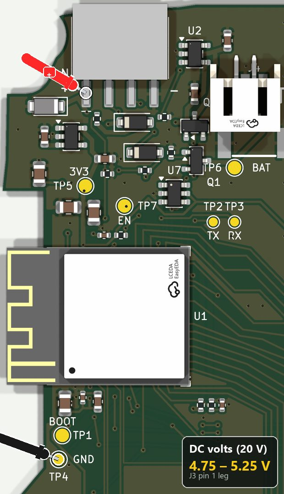
tap to enlarge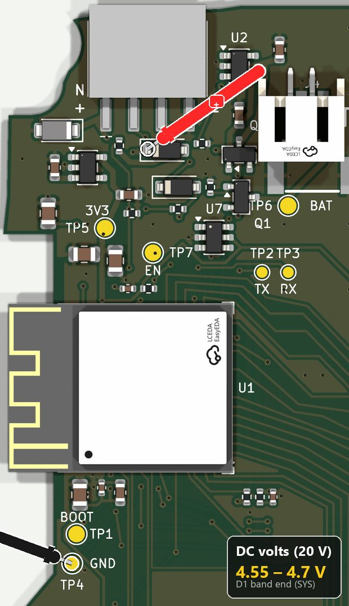
tap to enlarge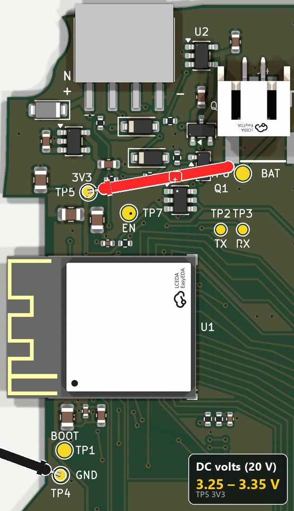
tap to enlarge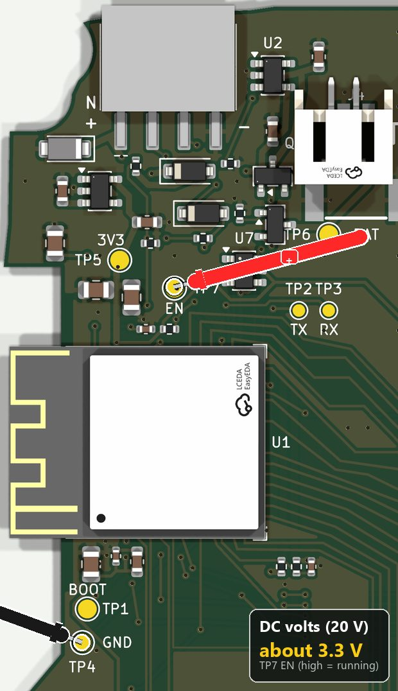
tap to enlarge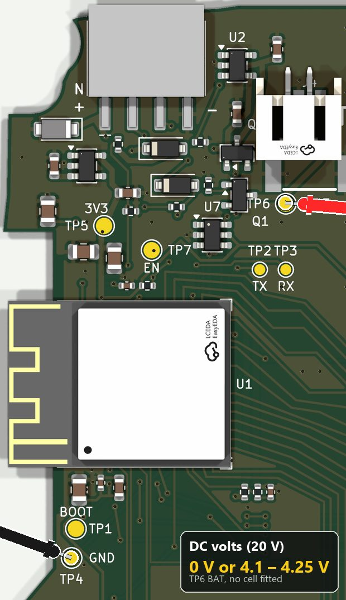
tap to enlargeWrong reading or hot part: unplug, let it cool, don't plug in again "to check". Note which part was warm and which reading was off, then ask.
The first flash is always over USB, on every board: a new board is blank, and the firmware uses a two-slot partition table (min_spiffs.csv) so that later versions can arrive over the air. An over-the-air update can never write the partition table. Never send a v14 image over the air to a v15 board (or the other way round): the screens are different hardware.
env:v15lcd, the wrong folder is open.Or type it (VS Code: Terminal > New Terminal, from the repo folder):
cd firmware-v15-lcd
%USERPROFILE%\.platformio\penv\Scripts\pio run -t upload
%USERPROFILE%\.platformio\penv\Scripts\pio device monitor -b 115200
A good upload ends with Hard resetting via RTS pin... and [SUCCESS]. Then the Serial Monitor; type in the box at the bottom and press Enter:
> status Firmware: v15lcd-2026.10.10 (slot app0) id calc-3f9a21 <- right build, first USB flash Camera: none Wi-Fi: not set (type wifi, or = on SETUP 6) <- normal until step 11 AI proxy: not set (type proxy) Device token: not set (type token) Battery: 0% (0 mV) <- no cell yet Screen: 320x170 LCD ok, brightness 60 % (now 60 %), dim after 20 s, ...
Example; the id and some numbers differ on your board.
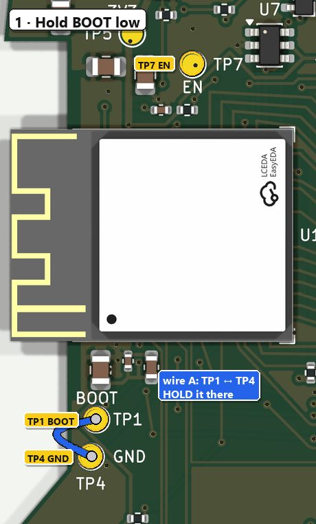
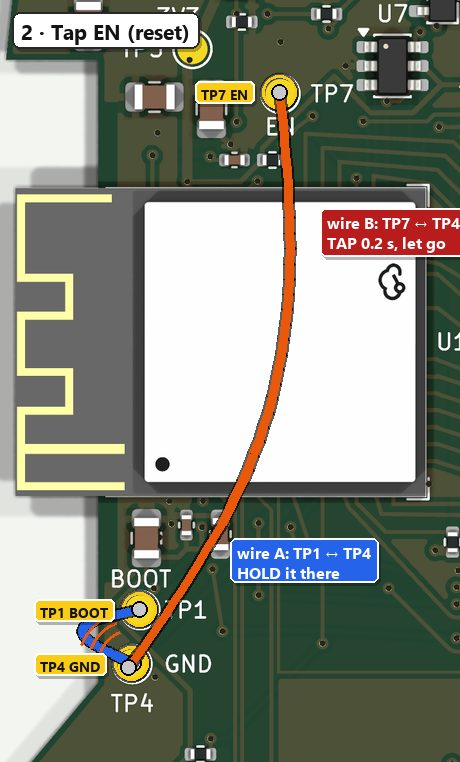
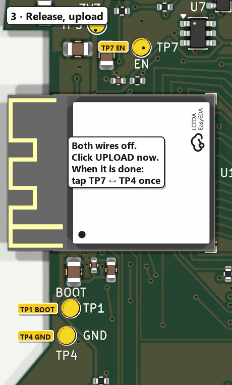
In download mode the Serial Monitor shows waiting for download and the COM port number may change. Nothing you do on these pads can damage the board: they are pulled up through resistors. Never touch TP5 (3V3) to TP4.
With a battery connected later, plugging the cable in does not reset the chip, so use the TP7 tap (or unplug the battery first). Last resort: a 3.3 V USB-serial adapter on TP2 (TX) / TP3 (RX) / TP4 (GND), then the same TP1 + TP7 sequence. In deep sleep the USB port disappears: press ON to bring it back.
| Field | Good value | What it proves |
|---|---|---|
firmware, firmware_slot | v15lcd-…, app0 | The v15 build is running, from app slot 0 after a USB flash |
memory_ok | true | 4 MB flash, 2 MB PSRAM found |
keypad_scanner_ok | true | U6 (TCA8418) answers on I²C (its interrupt is on IO3 on v15) |
vbus | true | Cable detected |
battery_mv, battery_ok, charge | 3000–4300, true | Meaningful once a cell is in |
lcd_ok, lcd_push_ms | true, about 20–40 (under 200) | The LCD driver started and one full 320 × 170 frame went out over SPI in time. It does not prove the panel shows it: the panel is write-only |
backlight_ok, backlight_pct | true, 60 | The backlight PWM swept 0 → 100 % and went back to your setting (60 % by default). Whether the LEDs really lit is again your eyes |
display_ok, display_refresh_ms | = lcd_ok, lcd_push_ms | Old v14 names, kept so old notes still read |
camera_ok, camera_jpeg_bytes, camera_autofocus | true, > 1000, true | OV5640 ID read, a JPEG taken, the autofocus firmware loaded |
wifi_ok | true | ≥ 1 network better than −80 dBm |
keys_ok, keys_missing, keys_all_ok | 50, [], true | Every key (needs the rubber keypad: Assembly Guide steps 8 and 11) |
pass | true | Everything above |
SELFTEST_JSON {"firmware":"v15lcd-2026.10.10","firmware_slot":"app0","device_id":"calc-…","trigger":"serial","reset_reason":"…","memory_ok":true,"keypad_scanner_ok":true,"battery_mv":3987,"battery_pct":75,"vbus":true,"chg_stat_high":false,"charge":"charging","battery_ok":true,"lcd_ok":true,"lcd_push_ms":24,"display_refresh_ms":24,"display_ok":true,"backlight_ok":true,"backlight_pct":60,"camera":"…OV5640","camera_jpeg_bytes":31877,"camera_autofocus":true,"camera_ok":true,"wifi_networks":7,"wifi_best_rssi":-48,"wifi_ok":true,"keys_ok":50,"keys_total":50,"keys_missing":[],"keys_all_ok":true,"pass":true}
Example of a full pass, made up from the firmware's field list (no v15 board has run yet). The real line also has chip_rev, flash_mb, psram_kb, camera_ms and a few more.
The line is long; this is the same example split up. Left: the field and a good value. Right: what it tells you. Paste your real line into a text file and go down this list.
Unplug the cable before each ribbon. Both sockets are flip-lid and dual-contact: they touch both faces of the ribbon, so it doesn't matter which face of the tail is up. Only which end is finger 1 matters.
On the bench the panel doesn't need to be taped down yet: lay it glass-up on the key side, feed the tail through the slot and into J5 the way the v15 Assembly Guide (step 5) shows. Taping comes later. If you already taped it, that's fine too.
Simulated pictures of the self-test screen. Find the one that looks like yours. The flags are in firmware-v15-lcd/platformio.ini under build_flags; change one value, Upload, look again. simulated, not photos of a real panel
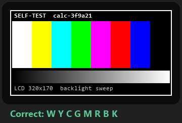
nothing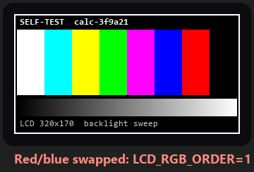
-DLCD_RGB_ORDER=1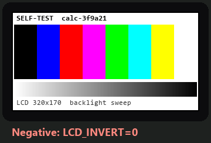
-DLCD_INVERT=0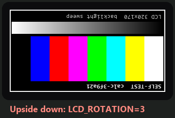
-DLCD_ROTATION=3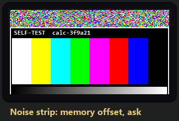
none yet: note the edge and width, ask (PORT_NOTES 1)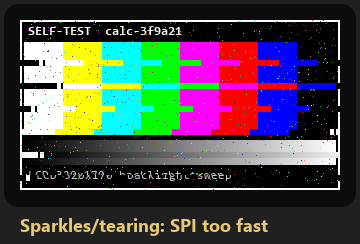
LCD_SPI_HZ 26 or 20 MHz in pins_v15_lcd.hno flag: cable off, redo the diode test, reseatno flag: reseat; then the R23 reading (step 10)build_flags = ... -DLCD_ROTATION=1 ; 3 = upside down -DLCD_INVERT=1 ; 0 if the colours look negative -DLCD_RGB_ORDER=0 ; 1 if red and blue are swapped -DPREVIEW_SWAP_BYTES=0 ; 1 if only the live preview has wrong colours
| What you see | Means | Fix (in firmware-v15-lcd/platformio.ini, then Upload again) |
|---|---|---|
| Bars left to right: white, yellow, cyan, green, magenta, red, blue, black; smooth grey ramp; full white border | All good | Nothing. Tick it off |
| Red and blue swapped (the bar second from the right is red, not blue) | Colour order | -DLCD_RGB_ORDER=1 |
| Washed-out, "negative" colours (the white bar is black) | Inversion | -DLCD_INVERT=0 |
| Everything upside down | Rotation | -DLCD_ROTATION=3 |
| A strip of noise along one edge, border cut off | Memory offset (35 px on this panel type) | Note which edge and how wide; ask (PORT_NOTES item 1) |
| Tearing, sparkles, random pixels | SPI too fast | LCD_SPI_HZ to 26 or 20 MHz in hardware/kicad_v15_lcd/pins_v15_lcd.h |
| Backlight on but no picture | Tail reversed (wrong end), not fully in, or lid open | Cable off. Redo the diode test in step 5, reseat. Don't add a twist without asking |
| Completely dark, no light during the sweep | Tail not in, or the backlight path (Q5, R23, LED fingers 20–24) | Cable off, reseat; then the R23 reading in step 10; ask |
The backlight is fed from 3.3 V through one small resistor, R23 (15 Ω, review 14; was 22 Ω), just above Q5 at the top of J5. How bright it gets depends on the LEDs' own voltage: the ER-TFT019-1 datasheet gives 2.8–3.2 V at 60 mA, which with 15 Ω means about 16–37 mA, 26 mA typical (review 14, item M1). It cannot go above 60 mA, the panel's rating, so nothing can overheat. One reading confirms it; only if it is under about 18 mA and too dim would a later board change R23 (12 Ω if the LED voltage is at least 2.75 V) or add a constant-current driver.
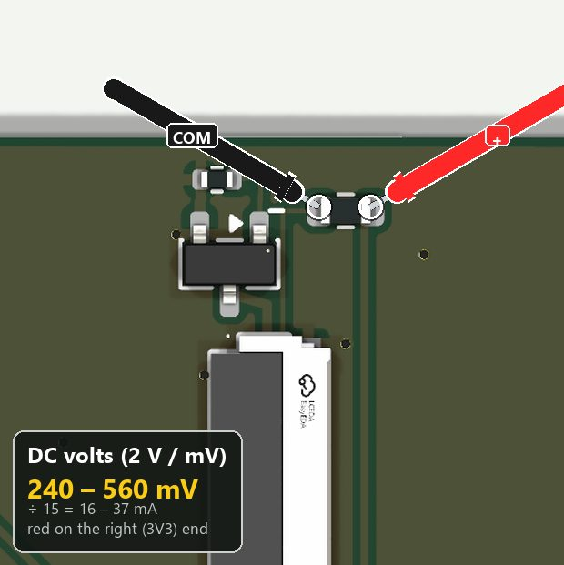
tap to enlarge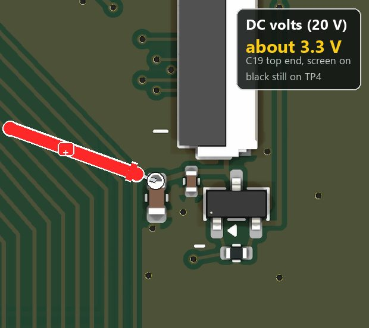
tap to enlargeRough guide: under 10 mA (under 150 mV across R23) is probably too dim outdoors; 16–37 mA (26 mA typical, 240–560 mV) is the expected range with 15 Ω, and the panel allows 60 mA. The battery pays about the same current while the light is on. Send the two numbers and your opinion.
The maths works without any of this. For AI SOLVE the calculator needs a phone hotspot (2.4 GHz), the address of your AI server (server/proxy) and its own device token. Putting the server online is exactly as in the v14 guide (its step 10). The calculator never holds the Claude API key.
dt_, the device id (for revoke) with dev_.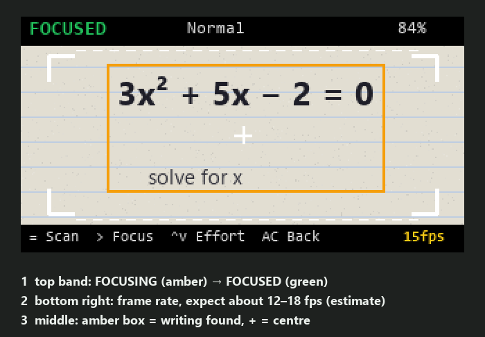
Screen messages: Not set up yet: SETUP 6 = address or token missing. NO CONNECTION = the hotspot is off or not 2.4 GHz. AI ACCOUNT = not linked yet, trial over, or the monthly cap. Battery low: plug in the cable to use AI solve = the cell is under 3.6 V: no preview, camera or Wi-Fi until it is back above 3.7 V or a cable is in; maths keeps working.
pins_v15_lcd.h)For reference while debugging. Everything not listed is the same as v14 (camera, I²C, ON key, battery sense, USB, test pads).
| Signal | GPIO | Note |
|---|---|---|
| LCD_MOSI | IO5 | Panel pin 10 (SDA). Was EPD_CLK on v14 |
| LCD_DC | IO6 | Panel pin 8 (RS, data/command). Was EPD_DIN |
| LCD_SCK | IO8 | Panel pin 7 (SCL). SPI2 through the GPIO matrix, 40 MHz. Was EPD_CS |
| LCD_CS | IO41 | Panel pin 6. Was EPD_DC |
| LCD_RST | IO42 | Panel pin 5, active low. Was EPD_RST |
| LCD_PWR_N | IO33 | Low = Q4 on = panel powered. R21 pull-up keeps it off in sleep. Was EPD_BUSY |
| LCD_BL_EN | IO4 | Backlight PWM into Q5. R22 pull-down = off in sleep. Was KEYPAD_INT |
| KEYPAD_INT | IO3 | Moved from IO4. Still wakes the chip from deep sleep |
| (no MISO, no TE) | — | The panel is write-only; pin 19 and the touch pins 26–29 are left open |
These roles changed in review 13 (2026-10-08) when J5's numbering was mirrored. Older notes (the first version of stage15_lcd.md, the pin table in firmware-v15-lcd/README.md) show RST 5 / CS 6 / DC 41 / MOSI 42. The header is right, and the firmware takes its pins from the header.
The bare board has passed. Everything from here on (shell teardown, grinding, LCD, camera, magnet, board into the shell, battery, closing, final test) is in the v15 Assembly Guide, which starts at its step 3 by asking for this guide's results.
Start at the top and stop at the first "wrong" answer. The table below has the details.
| Symptom | Likely cause | Check |
|---|---|---|
| A part gets hot | Short, reversed part, or reversed supply | Unplug. Re-inspect that part's orientation (step 2). Don't re-power until found. |
| VBUS near 0 V or negative | Magnet piece backwards | Unplug. Redo step 3; pin 4 leg must beep to TP4. |
| +3V3 = 0 V, VBUS fine | No SYS (D1), or U3 problem | Measure SYS at D1. Inspect U3 dot and pins for bridges. |
| +3V3 above 3.6 V | 5 V reaching a data line | Unplug. Redo the step 3 inner-leg checks. |
| No COM port | Deep sleep, wrong data legs, or bad flash | Press ON. Then the TP1 + TP7 recovery. Then step 3 continuity. |
status says stage14-… | The v14 project was flashed | Open firmware-v15-lcd and Upload again. |
keypad_scanner_ok false | U6 solder or I²C | Look at U6 for bridges or lifted pins; photo, ask. |
| Light on, no picture | Tail reversed or not fully in | Unplug, redo the diode test (step 5), reseat J5. |
No light, no picture, lcd_ok true | Tail not in, or the Q4 / Q5 side | Unplug, reseat. Then, on, measure C19 (next to Q4) to TP4: about 3.3 V. Ask. |
lcd_ok false, lcd_push_ms 0 | The driver didn't start (PSRAM canvas) | Check memory_ok; send the boot log. |
| Wrong colours, upside down, noise strip | Panel flags | Step 9 table. |
camera_ok false | Ribbon reversed or not seated | Unplug, redo the 2 ↔ 15 beep, reseat; then try a 180° twist. |
wifi_ok false | No 2.4 GHz network nearby | Phone hotspot on 2.4 GHz (iPhone: Maximize Compatibility). |
| Not charging | No cell, reversed cell, flat cell | Meter TP6. Recheck polarity (step 4). |
| Sleep current well over 40 µA | LCD lines not held low, or IO33 not floating | Send the number (PORT_NOTES item 5). |
| Restarts during the preview or AI SOLVE | Brown-out (status: "Last restart: brownout") | Note it. The firmware fix is to dim the light while Wi-Fi joins (PORT_NOTES item 9). |
| Backlight flickers at low brightness | PWM too low for these LEDs | Note the bright value where it starts; ask. |